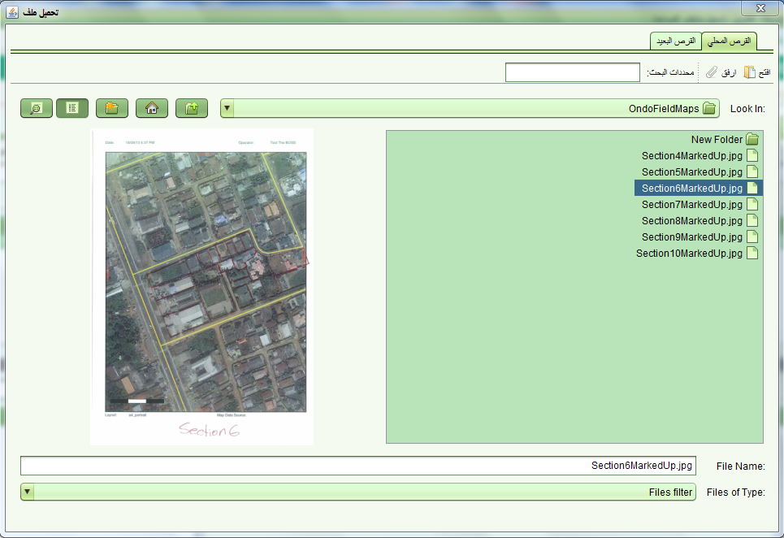
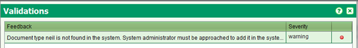

تحميل الوثائق الممسوحة ضوئيا بالجملة
تسمح هذه الوظيفة بتحميل الوثائق الحالية الممسوحة ضوئيا (على سبيل المثال وثائق التسجيل المتفرقة) إلى الأرشيف الالكتروني لسولا مما يسهل عملية الوصول اليها من قبل فريق التسجيل المنتظم.
مجموعة الوثائق الممسوحة ضوئيا
يجب ان تتم هذه الخطوة في بداية التسجيل المنتظم . الصور الممسوحة ضوئيا تحتاج الى تحميل على محطة العمل او على مجلد على الشبكة يمكن الوصول اليه من قبل المستخدم حتى تتم عملية التحميل على النظام . كل مجموعة موجودة على المجلد يجب ان تقابل نوع وثيقة معين كما هو مخزن في جاداول سولا .( source.administrative_source_type table in SOLA database)

الخطوات
في هذا الجزء من الشاشة , يجب تعريف النوع المقابل . في هذه اللحظة هناك نوعان :
- شغل برنامج عمليات الحزم في سولا
- من لوحة المراقبة اختر أداة تحميل الوثائق الممسوحة لفتح شاشة تحميل الوثائق
- حدد المجلد الذي يحتوي على سلسلة المجلدات الفرعية التي تحتوي مجموعة خاصة بنوع معين للوثائق (مثال المجلد الفرعي الخاص الذي يحمل اسم "الرهن " والذي يحتوي على صور الوثائق الخاصة بالرهن). عليك اختيار المجلد الرئيسي الذي يحتوي على المجلدات الفرعية . يجب ان يكون الخيار في القائمة المنسدلة "نوع الملف " مجلدات فقط
- انقر على تحميل . سوف تظهر رسالة "تم تحميل المصدر بنجاح"
يجب ان يكون الخيار في القائمة المنسدلة "نوع الملف " مجلدات فقط
اسم المجلد الفرعي يجب ان يقابل نوع المصدر المخزن في جدول سولا
امتداد اسم الملف يجب ان يكون من نوع .pdf, .tif, .tiff أو jpg
اذا لم يتحقق احد هذه الشروط سوف تظهر رسالة تحقق من المدخلات وسوف يتم تحويلك الى شاشة التحقق . اضغط على زر تحقق لمعرفة الشروط التي لم تتحقق

- اختر كائن أخر اذا اردت تحميل نوع كائن اخر مثل الطرق, نقاط التحكم , القرى, اخرى. أدخل نوع الكائن واختر الحقل من المصدر لاستخدامه في كاسم الحقل
Also See